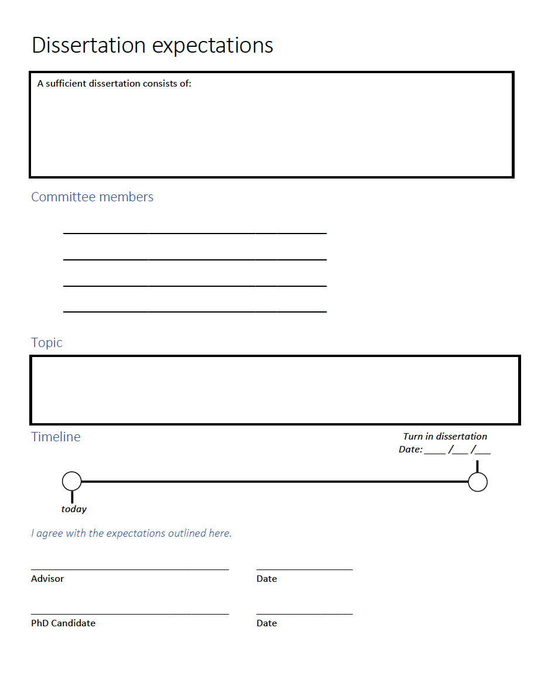
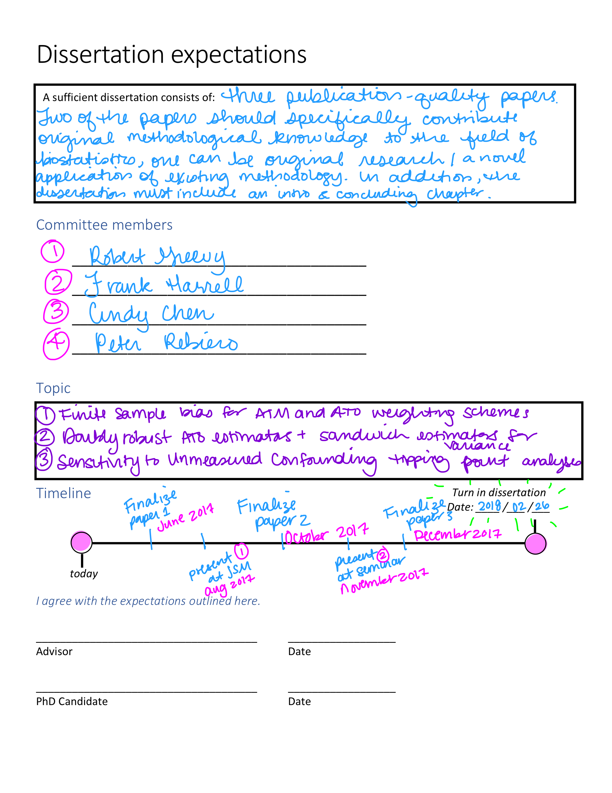
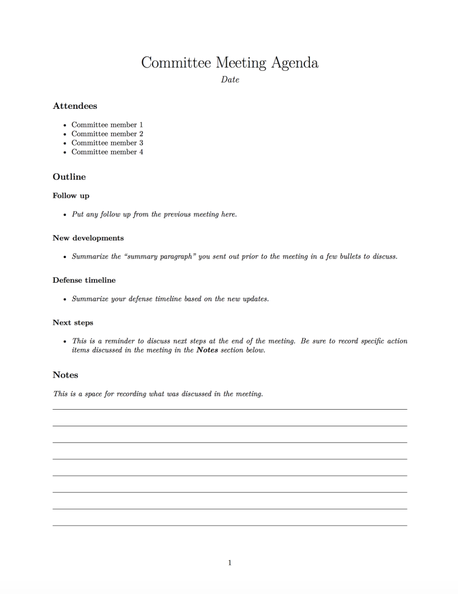
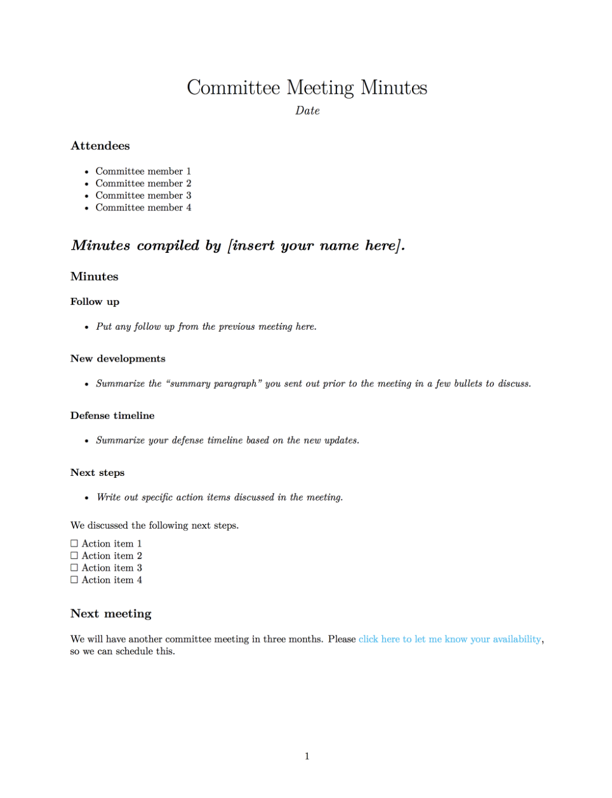
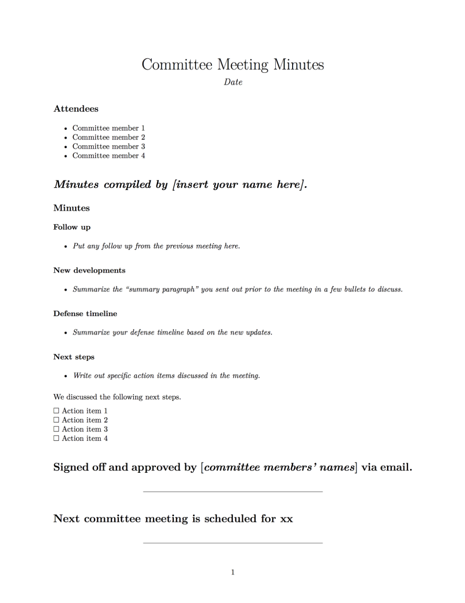
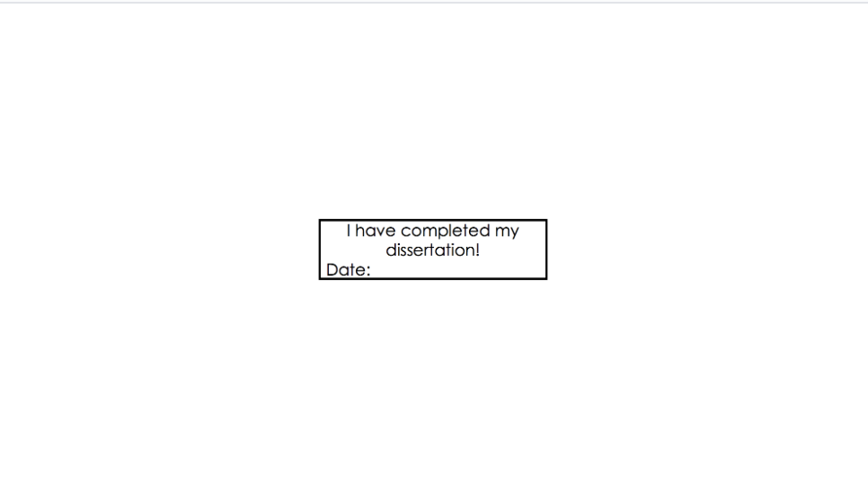
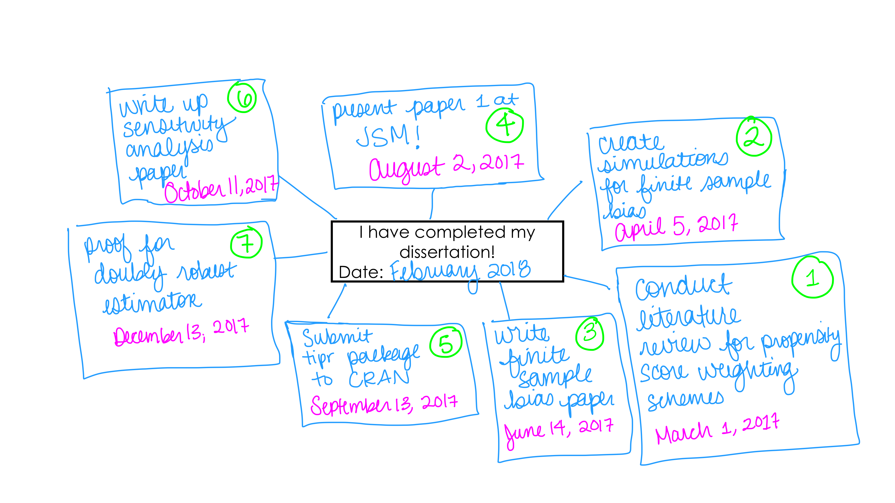
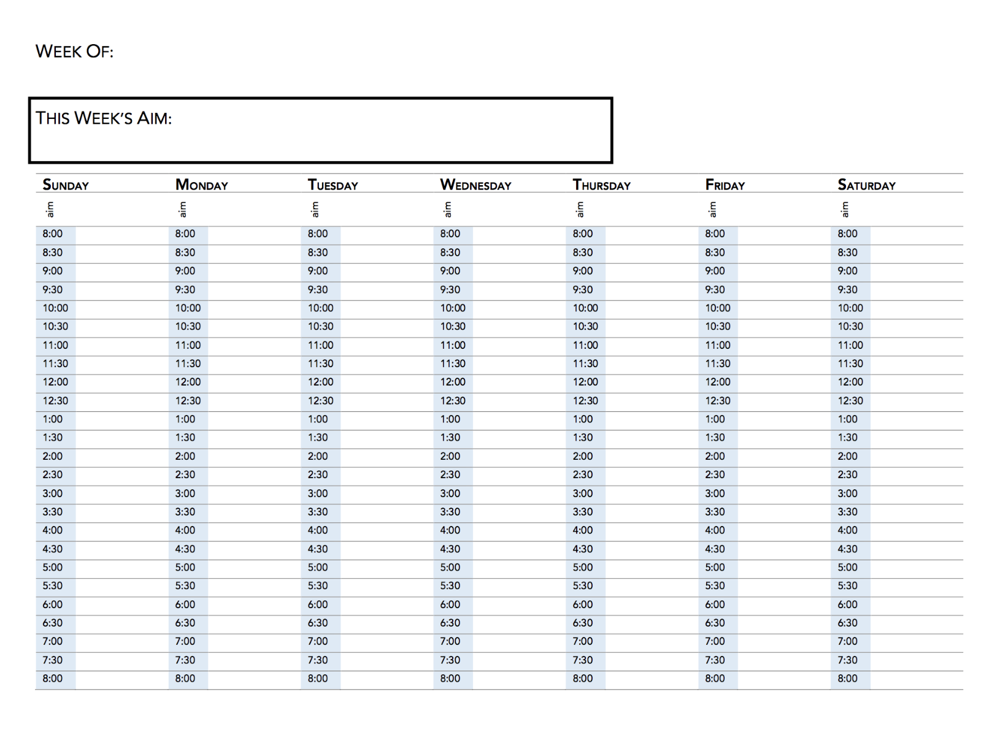
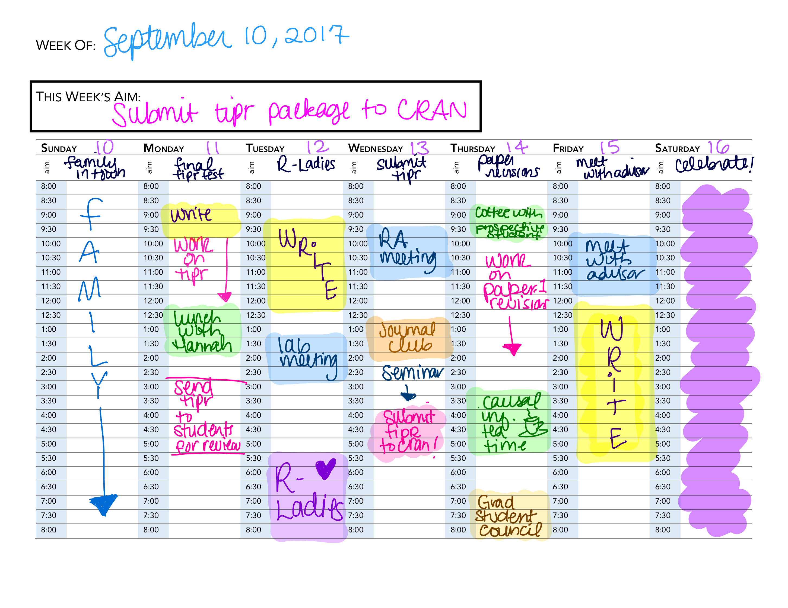
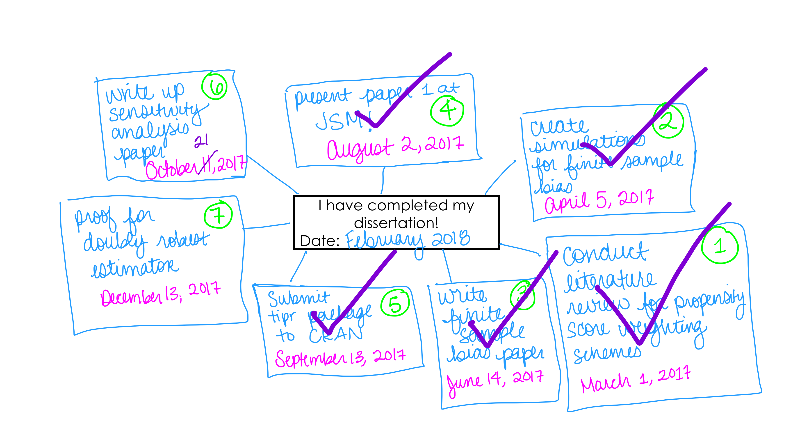

bookdown::render_book("index.Rmd")I’ve compiled some resources that I used when completing my dissertation and I wanted to share them with YOU! Throughout this post, I link to a bunch of different templates that I used throughout my process. You can find them all in this GitHub repo.
I’ve split this post into three sections:
- The practicals. This section will have specifics on how I was able execute certain tasks, such as committee meetings, draft writing, etc.
- The planning. This section will have details on how I planned out my time over the year to target a specific timeline.
- Other tid bits. This section is a mix of other things that didn’t quite fit in the first two sections, like some things I found helpful for keeping a positive attitude, etc.
This how-to has gotten a biiiiiit long. This post contains the whole kit-and-caboodle, but I will also be releasing these in a series of smaller posts over the next couple of weeks, so if this seems overwhelming, stay tuned for that!
Why am I writing this?
This is by no means the only way to complete a dissertation (or even the best way!) but maybe you can find something useful from my process 🤷.
Speaking with current and former PhD students, many of us find / found one of the most difficult parts of the PhD process was the element of unstructured time. I thought it may be useful to lay out one way to structure this time. For that reason, I am specifically focusing on the dissertating phase of a PhD rather than the coursework portion.
Background
Programs come in all shapes and sizes, so this may not fit your experiences.
For a bit of context:
- I graduated from Vanderbilt’s Biostatistics program
- At Vanderbilt, we have 2.5 years of mandatory course work
- We have two written comprehensive exams taken at the end of Year 1 and the end of Year 2
- Around the 2.5 year mark (January of Year 3), we have an oral exam - this (roughly) marks the start of your dissertating phase
- After I completed my oral exam, I had the goal of finishing up my dissertation in 1 year
I think the tools I am going to lay out here could be easily applied to other timelines if you just shrink or stretch each phase.
The practicals
Dissertation requirements
To start off, you’ll need your department’s dissertation requirements. This is sometimes vague, for example our department’s website just states:
The dissertation committee is responsible for administering the final PhD examination (i.e., dissertation defense) and will determine whether the candidate has presented an acceptable dissertation and has demonstrated strong proficiency in the five key skill areas during their educational tenure at Vanderbilt…Candidates for the PhD degree in Biostatistics must present a dissertation that yields clear evidence of original research and thinking, and that advances methodological knowledge in the discipline of Biostatistics.
I found it helpful to set up a meeting with my advisor to specifically outline his expectations. I found it really helpful to record all expectations in writing and have them reaffirmed via email after the meeting. This may seem obvious (or may seem like overkill!), but I think clear communication is one of the common roadblocks in the dissertation process. Here is a worksheet I’ve put together that can help with this.

Click here to download the file from GitHub.
Note that this can be revised lots of times! My third dissertation paper ended up being on a completely different topic than what was originally discussed – I think this is totally normal!
Here is (roughly) what mine would have looked like at the beginning.

Committee Meetings
I had committee meetings every three months. This was double the number required, but I found it really helpful for keeping my timeline. In order to get away with hosting so many meetings with many Very Busy people, these meetings had to be informative and efficient. I did a few things to try to achieve this, here are my recommendations:
- Send a draft of the dissertation chapter (or whatever content) you will be focusing on in the meeting one week prior.
- In addition to the dissertation chapter, include a short paragraph with a summary of changes directing the reader to specific paragraphs. This makes it a bit more likely that they may open the draft (or at least skim the summary paragraph), making it possible to dive right into the material at the beginning of the meeting.
- Create an agenda for the meeting. I am a HUGE fan of agendas. Here is the format mine took:

Not familiar with .Rmd files? Check out these awesome resources from RStudio.
Click here to download the .Rmd file from GitHub.
- Send a follow up email after the meeting with the meeting minutes and a poll to schedule the subsequent meeting. For this, I liked to just fill in my agenda with the next steps we discussed. It would often look something like this.

Click here to download the .Rmd file from GitHub.
- Compile a final document with the meeting minutes, the date for the next committee meeting, and a line indicating that all committee members signed off on the current plan. Here is what mine often looked like.

Click here to download the .Rmd file from GitHub.
Drafting your thesis
There are lots of great resources on how to write academic papers. My favorite is Jeff Leek’s first paper GitHub repo. My advice here is going to focus more on the practicals of drafting your dissertation paper(s): file structure, using bookdown, and file sharing.
These sections assume you are interested in writing your thesis using R. If not, you may want to skip down to the next section.
File structure
The most important part of having a nice structure for your files is that it is consistent. I’m going to briefly discuss how I do this, but it isn’t really important how you structure your files, you just want to be sure to do something logical (this will save lots of time later when doing revisions / getting feedback!).
The first part of constructing a lovely file structure is proper naming. Jenny Bryan has a beautiful slide deck on “Naming Things”. The main gist is file names should follow the following principles:
🤖 Machine readable
💁 Human readable
🤸♀ plays well with default ordering
Now that we have beautiful names, here is generally how I structure my files:
thesis
|_ 01-chapter1.Rmd
|_ 02-chapter2.Rmd
|_ 03-chapter3.Rmd
|_ 04-conclusion.Rmd
|_ 05-references.Rmd
|_ /_book
|_ _main.pdf
|_ citations.bib
|_ /data
|_ index.Rmd
|_ /notes
|_ /scripts
|_ compile.R
|_ send-to-drive.R
|_ /submissions
|_ /tex
|_ acknowledgements.tex
|_ dedication.tex
|_ doc_preface.tex
|_ params.tex
|_ preamble.tex
|_ thesis.Rproj Some of these files may not mean much to you, but the general gist is I have each chapter in a different file (like 01-chapter1.Rmd) and I have folders for the following:
/_book: This is where bookdown compiles my final thesis, called_main.pdf.
/data: This is where I have all of my data./notes: This is where I hold notes for various iterations of the thesis (including meeting minutes)./scripts: This is where I hold my compilation scripts, for examplecompile.Rto compile my thesis./submissions: This is where I hold versions of chapters that were submitted to journals for publication./tex: This is where I hold all of the.texfiles needed for compilation. This will be explained further in the Using bookdown section.
Angela Li has a great tweet about how she structured her thesis files as another example of how to do this!
When I was trying to procrastinate on actually writing, I would just organize my work, including my entire thesis into separate R Markdown documents linked by a master THESIS.Rmd file 2/n pic.twitter.com/8iGnOyrY2h
— Angela Li (@CivicAngela) August 1, 2018
In the thread above, she highlights a bunch of resources for thinking about file structure – I highly recommend a click through!
Using bookdown
Yihui has a great book (written using bookdown, obviously), bookdown: Authoring Books and Technical Documents with R Markdown, with lots of bookdown details that aren’t covered here! I wrote my dissertation using bookdown – it was a total delight! You can download a sample version of how I set everything up from GitHub.
I am going to walk through how you can update the files in the sample version for your own dissertation.
- The main file is
index.Rmd. Here is what my sample index looks like.
---
bibliography: citations.bib
output:
bookdown::pdf_book:
toc: no
template: null
includes:
in_header: tex/preamble.tex
before_body: tex/doc_preface.tex
documentclass: book
classoption: oneside
fontsize: 12pt
subparagraph: yes
link-citations: yes
biblio-style: apalike
---
# Introduction
Here is the introduction to my thesis.Two things I’d like to draw your attention to are the in_header and before_body parameters. These allowed me to incorporate the Vanderbilt LaTeX template. We’ll be updating these in the next steps. You’ll add your Introduction chapter to this file.
- The
texfolder contains the files you’ll need to update to personalize this.
preamble.texanddoc_preface.texare both based on Vanderbilt’s LaTeX template. If you aren’t updating the template, don’t touch these files. If your school has certain specifications, then you’ll need to edit these.preamble.texwill include anything you want to be located before the\begin{document}command.doc_preface.texincludes anything you want after\begin{document}, but before the main part of your text (the title page, etc.).
- Update the
acknowledgements.texanddedication.texfiles with your Acknowledgements and Dedication. - Update the
params.texfile with your information (name, title, university, etc.). - My set up assumes you are using the
nomenclLaTeX package to handle your list of abbreviations. To do this, the first time an abbreviation is used in your dissertation, include it like this\nomenclature{<abbreviation>}{<description>}(I have an example of this in the01-chapter1.Rmdfile). After you compile your bookdown book, a file called_main.nlowill be created. In your terminal, navigate to yourthesisfolder and run the following:
makeindex _main.nlo -s nomencl.ist -o _main.nls- Recompile your bookdown book, and a list of abbreviations will automagically be added.
- As I mentioned in the File naming section, I have a separate .Rmd file for each chapter. These will be automatically compiled when you compile the
index.Rmdfile with bookdown. The book is compiled using therender_book()function:
File sharing
I have gone through many iterations of file sharing, and this is where I have landed.
- Write each chapter in RStudio as a .Rmd file.
- Push to GitHub. This script is saved in the scripts folder in the bookdown example in my dissertation toolkit GitHub repo.
- knit the .Rmd file to a
word_documentand send this to Google Drive for comments / revisions from co-authors. I do this using the googledrive R package 📦.
# uncomment run the line below if googledrive package is not installed
# install.packages("googledrive")
#---- render your chapter as a Word document
rmarkdown::render(
"01-chapter1.Rmd",
output_format = "word_document")
#---- run this next part only once
file <- googledrive::drive_upload(
"01-chapter1.docx",
type = "document")
# get the file id (copy this to your clipboard)
file$id
#----
# paste file id, run this next part every time you want to push a new version to Google Drive
id <- "pasted File Id"
googledrive::drive_update(
googledrive::as_id(id),
"01-chapter1.docx")- Incorporate Google Drive suggestions by hand into the .Rmd file. This seems like a major pain, but the problem of round tripping from R to Google Drive is still an open question in the #rstats field. On the bright side, I find stepping through the Google Drive revisions is a good opportunity to thoroughly read through them.
- Send the update to GitHub.
- Revise the chapter.
- Repeat steps 2 - 7 as needed!
Planning and accountability
The section below is going to give great detail on my planning process. In addition to setting up a detailed plan to make an unstructured timeline quite structured, having someone (or many someones!) to hold you to this plan can be very helpful! For me, my husband was this someone. I shared my goals at the beginning of each month with him and asked him to ask me about it to be sure I stuck to the plan. Additionally, I set up “official” deadlines via committee meetings, conference presentations, and journal club presentations in an attempt to build in some concrete structure.
The planning
A lot of my goal-setting was adapted from principals I picked up using a Passion Planner.
This section is going to explain the specifics behind how I planned my dissertation timeline. I found it really helpful to have specific goals on detailed timelines in order to create structure around an inherently unstructured time.
Once you have made up your mind that you would like to finish your dissertation in a certain amount of time, pull out your department’s expectations and move on to Step 1.
Step 1: Setting the goal
For this first step, we are going to create a mind map with completing your dissertation at the center. Grab a blank piece of paper, and draw a box in the middle that says I HAVE COMPLETED MY DISSERTATION 🎉 or download and print this one 👇. Or if you don’t like to print, download this and stick it on a tablet you can write on (that’s how I did these!).

Click here to download it from GitHub.
Setting the timer became a really important part of the process for me. If I hadn’t set a short timer, I’m not sure that I would have followed through with my goal-setting routine.
- 📆 Add your defense goal in the Date box.
- ⏲ Set a timer for five minutes and write down all of the tasks that would need to happen in order to reach this goal.
- ☝️ Add in due dates for each of these tasks.
- 1️⃣ Stick a number next to each task in the order it must be completed.
Here is an example of what a portion of my original mind map looked like.

A few tips:
- Don’t panic and don’t be a perfectionist! You’ll get a chance to update these at the beginning of each month!
- Use things like conferences and journal clubs to set “real” deadlines for yourself. As much as my artificial deadlines helped add some structure to my process, having a “real” deadline, such as needing to prepare a talk, was super helpful.
- Speaking of “real” deadlines, as I mentioned above, I found it really helpful to have committee meetings every 3 months. This was much more frequent than the requirements, but these deadlines kept things moving along and kept everyone on the same page throughout. An important piece to this is making sure that the committee meetings are informative and efficient, using techniques like the ones highlighted in the practicals section above.
- Try to make the tasks as specific as possible. You’ll be updating this each month, so if specifics are hard to come by for a task that seems way in the future, you can update it later!
- If you aren’t sure of the exact date for something, just put the week.
Step 2: Set up your weekly calendar
Now that you have a bit of a global map 🗺 for the overall course of your next year (or whatever timeline you’ve set), now we need to scale this down to the micro-level. I found that a weekly calendar worked best for this!
Here is a weekly calendar I created for this purpose.

Click here to dowload it from GitHub.
At the beginning of each month, map the dates you’ve set on your mind map to these weekly views.
- Fill in the Week of and the dates for the days of the week in your calendar.
- Put the task from your mind map in the This Week’s Aim box.
- If you set a specific date, add the task to the aim under the date you’ve aimed for
- Now that you’ve mapped the global tasks, using the same template as above, create a mini map for the month. Specifically:
- Put the tasks for the month from your large mind map in the center of your new monthly map
- Set a timer for 5 minutes and write down specific (low-level) tasks that need to be completed to achieve your goals
- Add in due dates for these tasks
- Stick a number next to each task
- Add these micro-tasks to your weekly calendar
Here is an example of a week I mapped from the “Submit tipr to CRAN” task I set for myself on my mind map.

Step 3: Re-evaluate your mind map
The last week of the month, set aside 10 minutes to re-evaluate your mind map.
- Pull out the mind map you’ve set up and stick a nice check mark ✔️ next to the things you’ve completed (Woohoo, go you!!).
- Take a look at the next tasks you have coming up. If they seem realistic, complete Step 2 for your next month, if not, cross out the dates and set new ones! Add new tasks as needed to make your goals a reality!
Here is an example of an updated mind map.

Other tid bits
This is a random list of pointers that I heard throughout my process that I found useful.
- Surround yourself with people who encourage you! This makes such a difference for maintaining a positive attitude throughout! In our student-run journal clubs, we began each meeting with “Good News” to give us a chance to celebrate each other’s successes – I loved hearing about the exciting things everyone was doing and found it so uplifting to have a cohort so full of encouragement!
- Familiarize yourself with on campus resources. Most universities have lots of programming for PhD students (but it is not always easy to find!). Your mental health is extremely important during this time, so be sure to take care of yourself!
- Find ways to make sure you aren’t isolating yourself. For me, this included scheduling weekly fun activities (like Trivia!) and getting involved with groups both on campus (like Graduate Student Council) and off (like R-Ladies!).
- Choose your advisor carefully. Having an advisor that is a good personality match makes everything abundantly easier!
- Write a little bit every day. Think of writing as your job - what you write may never end up in a final paper, but constantly practicing will make you better!
Do you have anything I missed? Please let me know, I’m excited to have this be a live document!
🌻 Happy Dissertating!  Source
Source